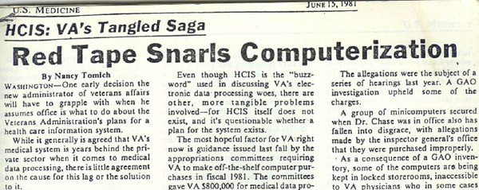
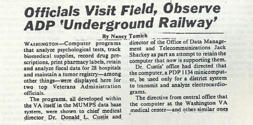
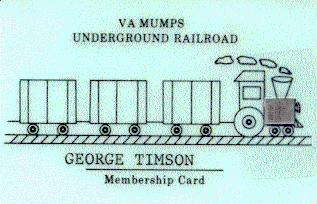
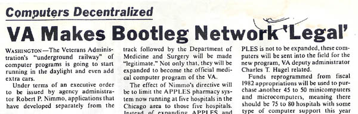

The History of the Hardhats
By George Timson |


Part I. The Origins -- 1977-1978
Part I. The Origins -- 1977-1978
The profusion of names in what follows is essential to the story. In the "Heroic Era" of the VA MUMPS effort, individuals time and again took a stand and made a difference -- many more stalwarts than can be named here. And anyone who is still involved with MUMPS ("M") today will recognize below the names of many long-time luminaries in the MUMPS community.
The story begins with the ANSI Standardization of MUMPS. That Standardization, in 1977, was blessed by a Federal agency then called the National Bureau of Standards. Two key players in this blessing at NBS were Joseph (Ted) O'Neill and Marty Johnson. Late in 1977, they moved into a small office called "CASS" (Computer Assisted System Staff") within the VA's Department of Medicine and Surgery. There, they had the vision that MUMPS could be brought into the VA hospitals nationwide. With the help of a tireless Washington insider, Henry Heffernan, they set about making that vision come true.
Marty and Ted soon began locating enterprising computerniks within the VA infrastructure. They found Gordon Moreshead and Wally Fort at Salt Lake, developing a clinical psychology data system. They found Bob Lushene in St.Petersburg, running patients through batteries of on-line psychodiagnostic tests. They found Richard Davis in Lexington, Kentucky, writing a nutrient analysis program for treatment of diabetics. They found Joe Tatarczuk in Albany, computerizing nuclear medicine. These were the first targets for proselytization, and each in time became a convert to MUMPS.
George Timson - 1980CASS also facilitated the hiring, during 1978, of some MUMPS experts from the outside, among them David Wilson of Oklahoma City, Arden Forrey of Seattle, Tom Munnecke and Bruce Beebe of Loma Linda, California, and George Timson of San Francisco. Timson traveled about, visiting the others and developing a set of requirements for an ideal MUMPS utility package. In June, 1978, he began building what came to be FileMan as a set of generalized routines (lookup, input, output, etc.) that the entire project could share.
All the MUMPSters and soon-to-be-MUMPsters had input to the design process. Timson and Wilson together, for example came up with the 7-digit "FileMan date format" that presciently anticipated the arrival of the year 2000. Munnecke provided hundreds of suggestions, and drew the others into his grand vision of a new kind of fully-integrated Database Management System/messaging/operating environment that would build on all the strengths of MUMPS. Collectively, the geographically dispersed group of programmers and analysts became known as the "hardhats", a moniker applied first by Marty Johnson. The hardhats were distinct from other VA clinicians and administrators around the country who provided organizational energy and vision, but pretty much kept their hands off the code.
Through various machinations, CASS was able to provide computer resources to several sites, often with some funding from the sites themselves. Ted O'Neill recalled a "war room" atmosphere as midnight drew near on the last night of the fiscal year, September 30, 1978. Minute by minute, he "tracked every penny" as it became available from VA Central Office reserves. Ted estimated he assigned $5,000,000 worth of "spend-it-or lose-it" money to computer purchases that night.
And so, in late 1978, brand-new PDP's were deployed. Salt Lake and St.Petersburg began converting their clinical psychology systems to MUMPS, Oklahoma City built a MUMPS scheduling system , and Columbia, Missouri, began a radiology project based upon a well-established MUMPS system ("MARS") located across the street from the VA Hospital at the University of Missouri. Meanwhile, in San Francisco, Timson's FileMan development was carried on for many months by remote access (quite unauthorized and quite unpaid-for) provided long-distance by a new startup MUMPS shop in Massachusetts named "InterSystems".
All this time, however, there was a "real" department of computers in the VA, administratively separate from the Department of Medicine & Surgery, and it was beginning to realize the challenge that the dispersed cadre of MUMPS developers potentially raised to its own mainframe-oriented data processing agenda. This rival office, with a staff and budget hundreds of times greater than CASS's, was always genially referred to by Marty Johnson as "The Enemy". Its long-term plan was to service the real-time data-processing needs of the 170 VA hospitals and clinics by means of leased lines to regional mainframe centers. Hospital-based computers and hospital-based software development were foreign to the mind-set of this group, and they knew that they had the clout to stop such "garage shops" from wasting time and money in such an un-co-ordinated fashion. As 1978 drew to a close, CASS circled its wagons to try to prevent the bureaucratic destruction of the MUMPS efforts.
The landmark occasion of wagon-circling was a grand meeting -- CASS's last gasp, as it turned out -- which was held at the Oklahoma City VA Hospital in December. All the above-mentioned players (save for Heffernan, the eminence grise) appeared at this week-long conference. It was moderated by none other than Professor Richard Walters, long-time Chairman of the MUMPS Users Group and the MUMPS Development Committee. Much technical co-ordination and agreement occurred at this meeting, as the various planners, administrators, clinicians and developers met each other, and committed themselves to try to adhere to common software design standards. A true ethos of co-operation was forged in Oklahoma City that memorable week.
Part II. The Underground --1979-1981
The optimism of the "Oklahoma City meeting" would soon be sorely tested. Within two months, the CASS office had been effectively dissolved, and several of its dispersed MUMPSters had been threatened with dismissal. In one case, in Columbia, Bob Wickizer went to lunch, and found, when he got back to his computer room, that his new PDP-11/70 had been unplugged and was in the process of being crated. By all accounts, the machine never again processed another instruction, anywhere. "The Enemy" had won -- or so it seemed. But, of the original MUMPSters, only a couple actually were forced out of the VA. CASS had seen to it that all its 'operatives' were part of the organization of the various hospitals in which they were located, rather than reporting to VA Central Office. Even Marty Johnson was able to find refuge at the Washington D.C. VA, although the computer he worked on was pretty much destroyed by a fire of suspicious origin a couple of years later! Ted O'Neill went into the fish business.
Now began the three-year period of what was quite seriously called by its participants "The Conspiracy". Keeping up their esprit with weekly conference calls, seeing each other at annual MUMPS Users Group meetings, the various 'conspirators' plugged ahead, trying to make their work immediately useful to the Medical Centers in which they found themselves, while also trying to hold on to the goal of integrating their various efforts, through use of what Tom Munnecke dubbed the 'Kernel' software, into a comprehensive package that could one day be knit together.
It would be impossible to catalog all the tools and FileMan-based applications that were built by the VA 'conspirators' during this period of what The Enemy called "bootleg development". In Salt Lake, a comprehensive Clinical Lab System was brought into being, in Palo Alto, a Clinic Scheduling System. Pharmacy record-keeping was built in no fewer than four separate sites: Salt Lake, Fresno, Washington, and finally Birmingham, with each analyst or group of analysts sharing and passing on his work to the others.
In the age of the Internet, it is hard to realize how difficult software interchange once was. For the Hardhat developers, working "underground", the difficulties were compounded because, in most cases, the computers they used were lacking tape drives! Many had been acquired officially as "Word Processors", because buying a computer as a computer would have set off alarm bells in Central Office back in Washington. George Timson developed FileMan for five years before his "Word Processor" was fitted out with a tape drive.
Michael Distaso
"Committing portability", then, as Munnecke called it, was accomplished via error-prone 300-baud modems, and by physically carrying caketray-sized disk packs from one site to another. Under Marty Ivers' inspiration (and with the saintly benediction of his superior, John Peters), the six VA's of Northern California and Nevada were pioneers in learning how to transport and update applications systematically from one "Word Processor" to another. This was the milieu in which Timson invented the "DIFROM" portability tool -- "the gonads of FileMan", as he liked to call it. It was also where the unbounded energy and dedication of Michael Distaso first made itself felt, as he gradually took on an essential role in the design and implementation of the VA system.
Especially through the MUMPS Users Group, the hardhats began to make their work known around the VA, and outside it. MUG began to offer FileMan on tape to its members. A German translation was made in Frankfurt. Word spread as far afield as Finland, where a consortium of universities and hospitals set about acquiring (and translating into Finnish) as much of the Kernel and the VA applications as they could. As the Finns like to say, "Finland adopted the VA software before the VA did".
But momentum was building within the agency. "The Enemy" was doing little to satisfy hospitals' on-line needs. The history of computer technology was running in favor of decentralization. Microcomputers were being acquired more easily, in spite of bureaucratic obstructions, and MUMPS applications based on the Kernel began to flower in niches around the country. The MUMPS prototypes were proving their usefulness in day-to-day patient care, whereas "The Enemy" kept working on a long-term plan for an immensely expensive Health Care Information System that somehow never seemed to get built.
When Central Office ordered that several MUMPS programs actually be turned off, physicians who had begun to rely on them rebelled. The Executive Director of the National Association of VA Physicians (NAVAP), Dr. Paul Schafer, began to promote the MUMPS efforts in his role as advocate for the clinicians in the Medical Centers. A Washington journalist, Nancy Tomich, published in U.S. Medicine a series of muckraking articles like this one:

Reporting that the use of MUMPS had been officially banned in the VA medical system, she wrote,
What is clear is that this ban has produced some "undercover" development of clinical computer programs that use MUMPS...superior to the few systems now slated for installation.
Congressional staffers began investigating. The VA's Chief Medical Director, Dr. Donald Custis, felt himself under pressure. The Administrator of the VA (newly appointed by the new President), and his bright young deputy Chuck Hagel, appeared willing to take a fresh look at things. Could the 'conspiracy' finally hope to make a bid for legitimacy?
Part III. Becoming 'Legal' -- 1981-1982
Urged by Dr. Schafer, the Chief Medical Director paid a visit to the Washington VA Hospital, six miles and a worldview away from Central Office. Here, where Marty Johnson had labored in long exile, a cadre of MUMPS-savvy programmers and clinicians had coalesced, including MUMPSters Dan Maloney and Chuck Leahey, and the head of Pulmonary Medicine, Ken Dickie, who had a strong vision of how computers could be knit into every aspect of patient care. Another MUMPS stalwart, Dr. Marina Bates, had been bringing up MUMPS modules in co-operation with them at a nearby Maryland VA. When Dr. Custis arrived, he was told by the Hospital Director of the "100%" support which the threatened patient-care modules enjoyed. Custis was shown the scope of the software, some modules home-grown, some imported from the other MUMPS sites, and then was heard to remark, "it sounds like an 'underground railway' has been at work--and doing good work". Nancy Tomich reported the whole confrontation in a mammoth U.S. Medicine article entitled

The conspiracy had a name.
The controversy in the VA intensified in the fall of 1981. Tomich, on Page 1, likened it to the Cold War. Schafer kept the pressure up within NAVAP, and then began formulating a plan for a full-blown demonstration of the MUMPS applications, not to the D.C. bureaucracy, but to VA physicians themselves, from all over the country. Many would be attending the annual Symposium on Computer Applications in Medical Care at the Sheraton Washington in early November. A number of the MUMPSters, too, would be coming. The time was ripe to try for a publicity coup.
In the days before SCAMC began, preparations were feverish. The hardhats trucked two microcomputers into a suite of rooms which NAVAP had rented in the hotel, and began loading them up with all the MUMPS applications in their arsenal. Spirits soared back to the level of excitement that had been felt three long years before in Oklahoma City.

Tom Munnecke, latching on to the 'Underground Railroad' identity, had "business cards" printed up with a choo-choo-train logo. Many a conspirator still treasures his card. "VIP" cards, given out to those whose friendship was sought, were specially laminated so that the boiler of the train's engine was represented by an actual half-inch-square microprocessor chip! On the afternoon that the Symposium began, Munnecke and Davis were granted a drawing-room session in the hotel with Dr. Custis, who of course was given a card. The story goes that during the whole ensuing "sales pitch", Custis sat looking at the card and rubbing his thumb over the embedded chip. A Computer!
The "sale" was made, not to Custis so much as to the assemblage of VA physicians and administrators from around the country, who got to take a look at these MUMPS programs they had been hearing about. Several Symposium papers describing the "Underground" software also helped spread the word. By the end of the conference, the momentum had shifted in favor of the MUMPS work, and a month later Custis rescinded all orders to root out MUMPS computers in the VA.
It remained, then, for the VA to officially legitimatize the MUMPS work. Two months later, Nancy Tomich got the scoop. The February 15, 1982 issue of U.S. Medicine headlined

On February 18, 1982, Administrator Nimmo signed the Executive Order that set into motion what became DHCP -- the Decentralized Hospital Computer Program. A nationwide Task Group was constituted, on which sat Ivers, Lushene, Tatarczuk, and Bates. Its head was Dr. Dickie. The Underground Railway had come out of the tunnel.
But now the conspirators had to live up to their press notices. Every hospital director in the system wanted the newly-sanctioned technology. Money was tight. Dozens of new MUMPS "converts", emerging all around the VA system, needed to be indoctrinated into the techno-culture of MUMPS and the Kernel that the Conspiracy had built up. Marina Bates and Ken Dickie spent 1982 in one long marathon effort to get as much hardware and software out to the field as possible, while the Hardhats worked long hours to get their software "ready for prime time".
Tom Munnecke
It was a hard year -- and there would be more hard years to follow -- but by the time of the next SCAMC, November of 1982, Tom Munnecke was ready to "declare victory" over "The Enemy". At a banquet in Washington, the first of what would become a tradition of "Underground Railroad" dinners, Tom gleefully contrasted what the 'centralized' approach had produced, versus the achievements of the Hardhats:
"Every one of their systems is A) totally dependent on a specific vendor, and B) incompatible with every other system they have developed. Every one of our systems is A) vendor independent, and B) compatible with every other of our systems. And they accuse us of helter-skelter development!"
It was all true, and a fateful sign of the Enemy's defeat was a key defection from its ranks. Around this same time, David Van Hooser moved from one side of the battle line to the other. After having seen the MUMPS effort from an antagonist's position, he became (like Saul after Damascus) perhaps its most powerful advocate within VA Central Office. Soon thereafter, he became head of the office administrating DHCP in Washington. From then on, to the very end of his lamentably short life, he devoted all his extraordinary intellectual energy and bureaucratic savvy to making a success of what the Underground Railroad had begun.
Part IV. In Memoriam
Bruce Beebe died in 1982, Michael Distaso in 1989, Paul Schafer in 1991, David Van Hooser in 1993, Bob Lushene in 2001, Ted O’Neill in March 2011, Marty Johnson in April 2020, Richard Walters in January 2021, Richard Davis in August 2021, and Henry Heffernan in January 2022.